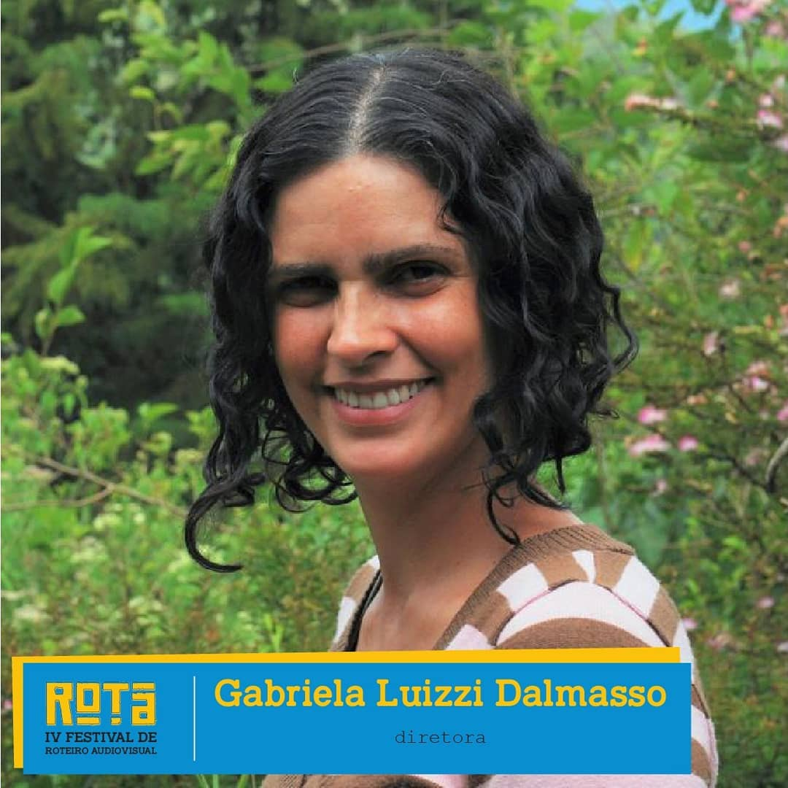
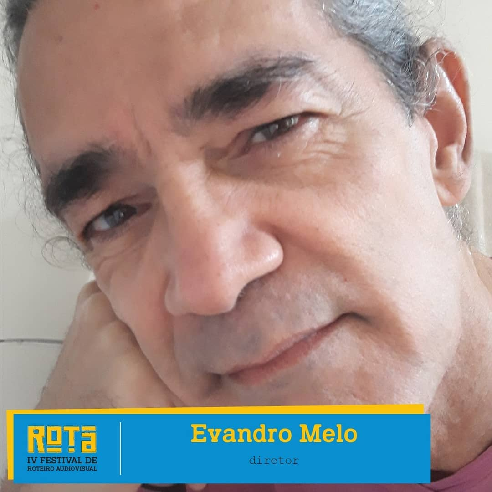
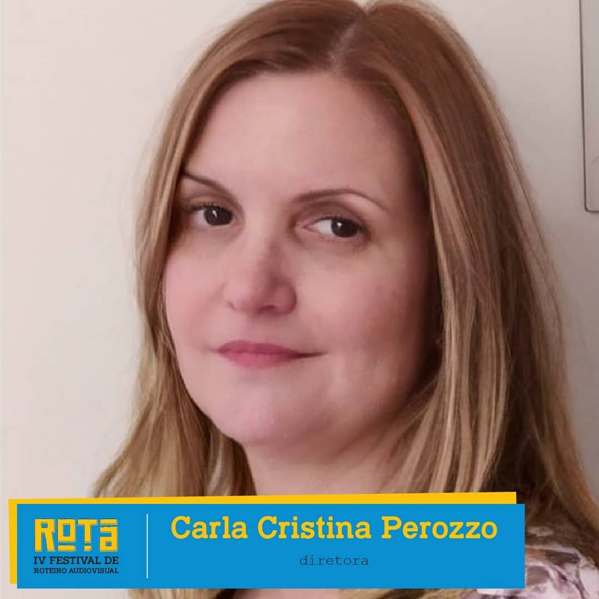
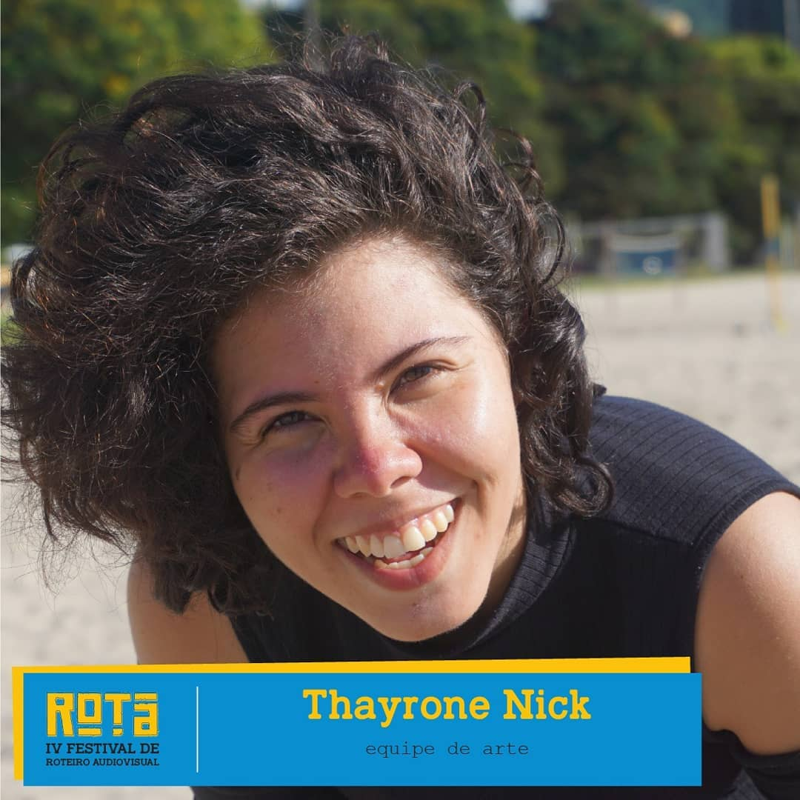
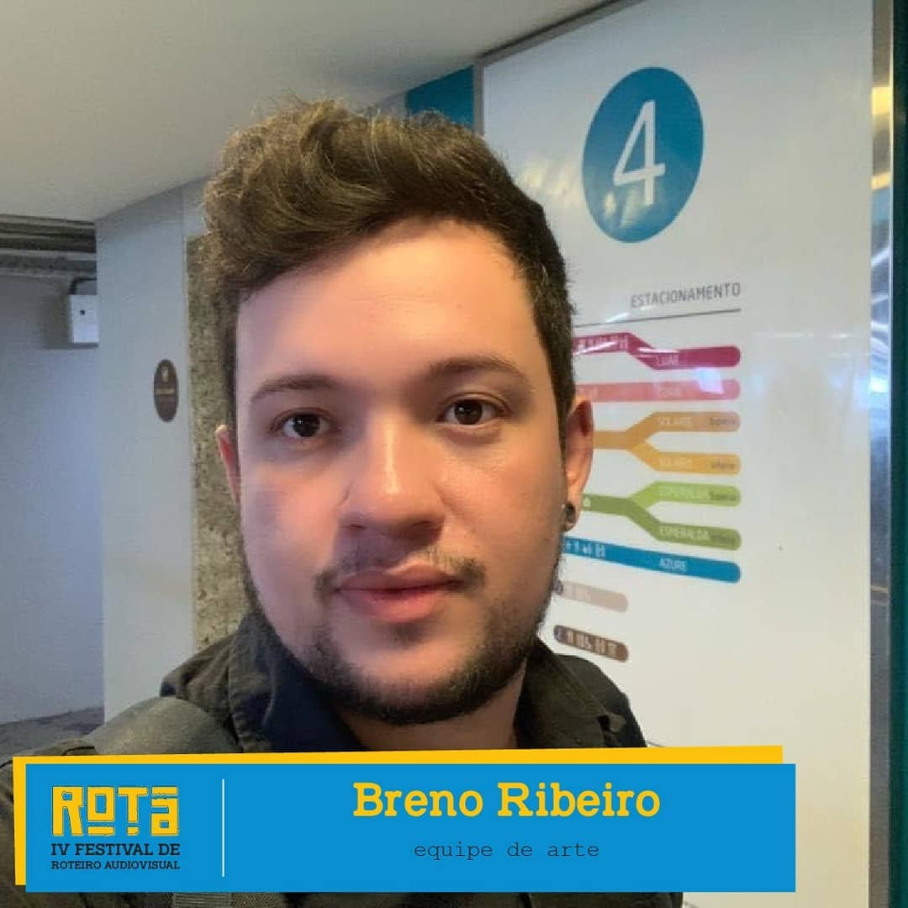
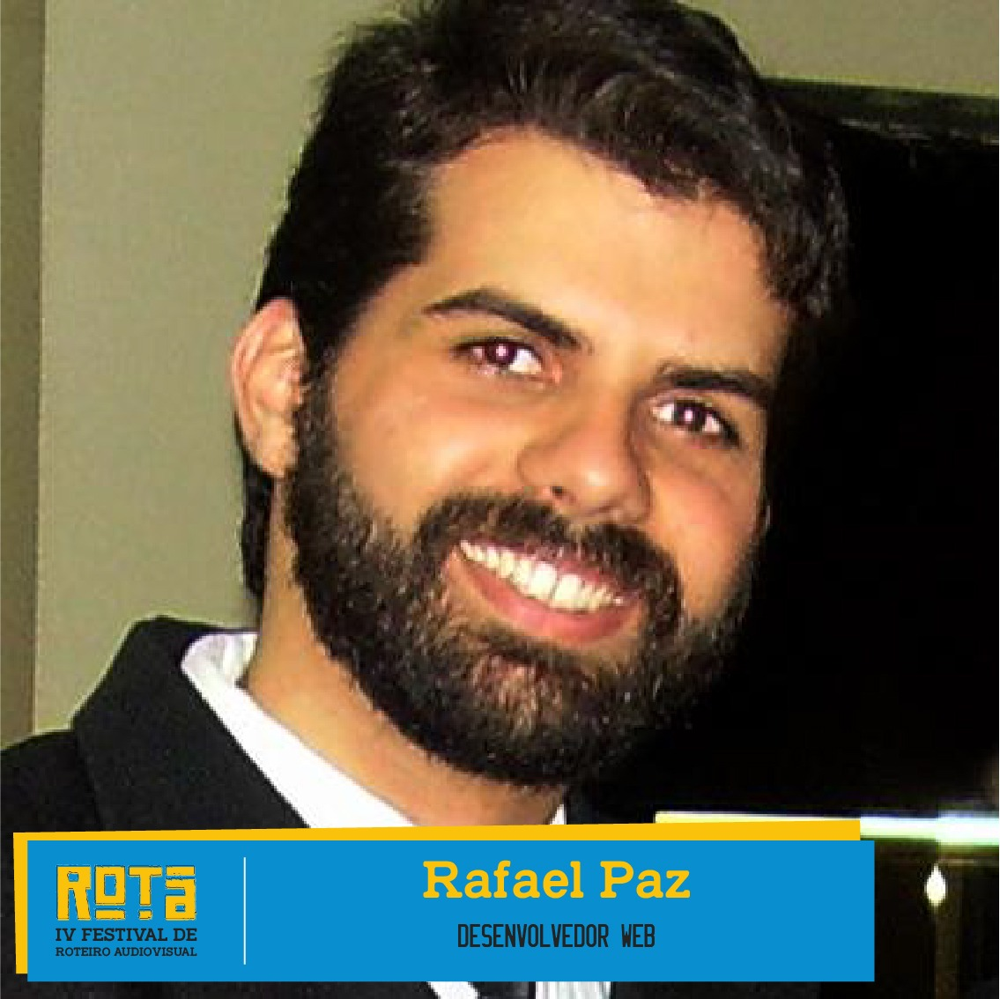

Gabriela Liuzzi Dalmasso (Diretora) - formada em roteiro cinematográfico pela Escola de Cinema Darcy Ribeiro e fez diversos cursos livres de roteiro. É diretora do ROTA - Festival de Roteiro Audiovisual e sócia da Aiuru Filmes. Foi finalista do Laboratório Novos Roteiristas e consultora do Laboratório de Curtas Luzes da Cidade. Dirigiu e roteirizou o curta "Com os pés na cabeça", dirigiu o curta “A Trilha” e foi assistente de direção em 4 curtas. Foi jurada do II Prêmio Rede Sina.
Evandro Melo (Diretor) - ator formado desde 1988 pela Escola de Teatro Martins Pena. Dá aulas de interpretação como convidado em Angola, para onde levou a obra de Nelson Rodrigues com ineditismo ao palco, além de filmar um documentário sobre a Companhia de Teatro Horizonte Njinga Mbande de Luanda, em fase de edição. Desenvolve atualmente um roteiro de ficção em animação com recortes documentais sobre os índios isolados da região Uru Eu Wau Wau, de Rondônia.
Carla Perozzo (Diretora) - professora de filosofia, apaixonada desde sempre pela sétima arte, começou a estudar roteiro na Escola de Cinema Darcy Ribeiro em 2016, na mesma turma que Gabriela Luiza Dalmasso e Evandro Melo, amigos com quem divide a direção do ROTA Festival.
Thayrone Nick (Arte) - bacharel em Cinema pela Universidade Estácio de Sá. Atua como produtora audiovisual desde 2017 e já produziu diversos filmes como "Quando Eu Soltar a Minha Voz" (pós-produção), "Através dos Sentidos" (vencedor do Edital Elipse 2019) e "Uma Tia da Pesada" (tele-filme para a plataforma NET Now) além de se especializar na área de captação de recursos para projetos. Este ano realiza sua segunda participação na produção do ROTA Festival.
Breno Ribeiro (Arte) - formado em design, em produção multimídia e pós graduando em roteiro pela Universidade Veiga de Almeida. Apaixonado por tudo que envolve criatividade, também fez parte da equipe de redes sociais do IV ROTA.
Rafael Paz (Desenvolvedor Web) - formado em Engenharia da Computação pela Universidade do Estado do Rio de Janeiro, atua a mais de 15 anos como desenvolvedor de software. Apaixonado pela sétima arte desde criança, frequentou cursos de Edição/Montagem e Efeitos Especiais. Estudou também Roteiro cinematográfico na Escola de Cinema Darcy Ribeiro, onde conheceu os fundadores do Rota. Hoje atua como desenvolvedor de sistemas de logística em uma grande empresa de Energia e no tempo livre trabalha no site do Rota, aprimorando e sustentando o aparato tecnológico por trás do concurso.